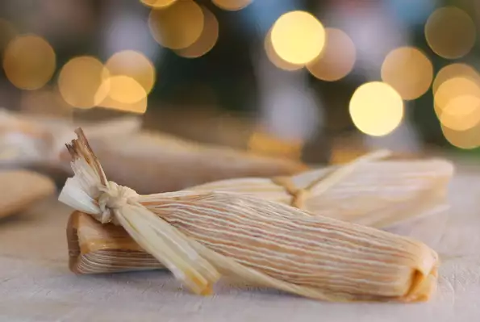

Leftover Turkey Tamales

Leftover Turkey Tamales
These tamales take some time, but are well worth the effort. They are a great way to use up leftover holiday turkey. These are also healthier than many traditional tamale recipes which are made with lard. These freeze well and can later be either microwaved or re-steamed. Serve with lime wedges as garnish.
Ingredients Include:
-
1 5-ounce package cornhusks
Tamale Dough
- 3 cups masa harina
- 1 tablespoon paprika
- 1 tablespoon chili powder
- 1 tablespoon garlic powder
- 1 teaspoon ground cumin
- 1 teaspoon salt
- 1 cup corn oil
- 1 quart turkey broth, divided
Turkey Filling
1 tablespoon olive oil1 onion, finely chopped2 cloves garlic, minced
3 ½ cups finely chopped cooked turkey1 teaspoon paprika1 teaspoon dried oregano
1 teaspoon ground cumin1 teaspoon chili powder1 teaspoon salt¼ teaspoon ground black pepper¼ teaspoon cayenne pepper, or to taste
Steps
- Soak corn husks in a bowl of warm water until softened, about 1 hour; drain.
- Mix masa, 1 tablespoon paprika, 1 tablespoon chili powder, garlic powder, 1 teaspoon cumin, and 1 teaspoon salt together in a bowl. Stir corn oil into masa mixture. Measure 1/2 cup turkey broth and set aside.
- Heat olive oil in a skillet over medium heat; saute onion and garlic until softened and translucent, 5 to 10 minutes. Remove skillet from heat and add turkey, 1 teaspoon paprika, oregano, 1 teaspoon cumin, 1 teaspoon chili powder, 1 teaspoon salt, black pepper, and cayenne pepper. Stir reserved 1/2 cup turkey broth into filling until moistened.
- Spoon 1 heaping tablespoon dough in the center of each corn husk. Top filling with 1 heaping tablespoon filling. Roll husk around dough and filling, tucking bottom of husk into tamale. Tie a corn husk strip or string around each tamale to secure.
- Place a steamer insert into a saucepan and fill with water to just below the bottom of the steamer. Bring water to a boil. Stand tamales upright in steamer, cover, and steam until cooked through, about 1 hour. Add more water as needed.